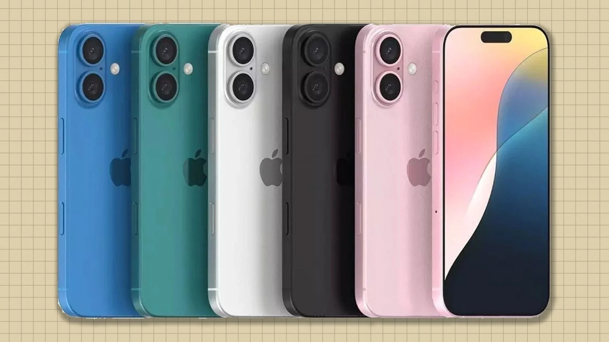
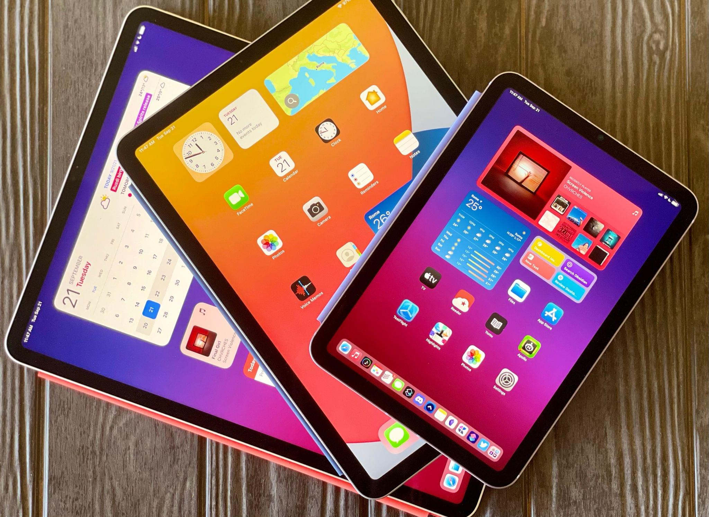

Apple Inc. (formerly Apple Computer Inc.) is an American computer and consumer electronics company famous
for creating the iPhone, iPad and Macintosh computers. Apple is one of the largest companies globally with
a market cap of more than $3 trillion. Apple devices are renowned for their design aesthetic and attention to detail.
Tight integration between hardware and software gives their systems a performance advantage over competitor systems with similar specifications.
Apple rose to its position as a market leader by correctly positioning its products.
They didn't invent personal computers, graphical user interfaces (GUIs), mp3 players, smartphones, smartwatches or tablets.
Instead, they produced some of the first versions of these products that were refined, easy to use and well-designed, which led to wide market adoption.
【Top 3 Popular Products of Apple】
1. iPhones
iPhone, series of smartphones produced by Apple Inc., combining mobile telephone, digital camera, music player, and personal computing technologies. After more than two years of development, the device was first released in the United States in 2007.

2. iPads
The iPad is a touchscreen tablet PC made by Apple. The original iPad debuted in 2010. Apple has four iPad product lines: iPad, iPad mini, iPad Air and iPad Pro. All models are available in a variety of colors

3. AirPods
AirPods 4 give you a seamless listening experience across iPhone, Apple Watch, Apple Vision Pro, iPad, Mac, and Apple TV. So if you're playing music on your Mac, you'll be able to answer a call on your iPhone — without having to switch devices.
.png)